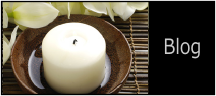
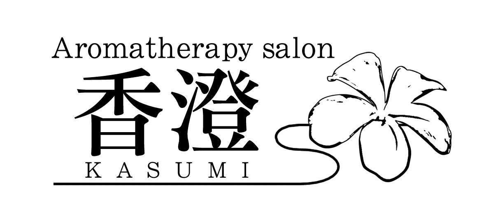

080-1264-3424
スマホ版Homepageは
こちら
から
AEAJアロマテラピーアドバイザー資格認定教室
AEAJアロマハンドセラピスト資格認定教室
ドライヘッド・フェイシャル/アロマトリートメントスクール
HOME
｜
MENU
｜
SCHOOL
｜
SALON INFO
｜
MAIL
※税込
AEAJ
資格認定教室
(AEAJ=公益社団法人 日本アロマ環境協会）
お申込の前に「AEAJ検定・資格の詳細
は
こちら
」を必ずご確認ください
AEAJ アロマテラピー検定対応コース
10時間
30,000
■アロマテラピー検定1級合格に向けた学習：7時間
＋
合格しAEAJに入会後
アドバイザー認定講習会（アドバイザー
資格取得に必須）
：3 時間
■アロマテラピーアドバイザーになるための流れ
・アロマテラピー検定1級に合格する
・AEAJに入会する
・アロマテラピーアドバイザー認定講習会を受講する
■こんな方におすすめ
・自分や家族などの健康維持にアロマテラピーを活用したい
・アロマテラピーを体系的に学びたい
・さらに上位の資格を目指したい
・仕事の幅を広げたい
＋
・アロマショップで販売に携わりたい
・職場の環境改善や健康管理の一助にアロマテラピーを導入したい
・一般の方に安全なアロマテラピーをアドバイスしたい
・友人とアロマクラフトを楽しみたい
■受講条件：どなたでも可
■受講料：30,000
アドバイザー認定講習会費、クラフト実習代込
テキストをお持ちでない方は、ご自身でご用意いただくか
別途テキスト2,640、問題集1,430かかります（受講料事前振込）
■受講時間：10時間（5時間×2日 or 4時間＋3時間×2日の3日）
■修了者には、資格申請に必要な
「アロマテラピーアドバイザー認定講習会履修証明書」を発行します
■検定や資格に関する情報は
こちら
■検定申込期間や試験日の詳細は
こちら
AEAJ アロマテラピーアドバイザー認定講習会
3時間
5,236
■受講条件：アロマテラピー検定1級に合格し
AEAJに入会している方
■受講料：5,236
（受講料事前振込）
■受講時間：3時間 ×1日
■修了者には、資格申請に必要な
「アロマテラピーアドバイザー認定講習会履修証明書」を発行します
AEAJ アロマハンドセラピスト資格対応コース
5時間
16,500
■アロマハンドセラピストとは… 詳細は
こちら
安全にアロマテラピーを行うための知識を持ち、第三者にアロマ
ハンドトリートメントを提供できる能力を認定する資格です
■アロマハンドセラ ピストになるための流れ
・アロマテラピー検定1級に合格する
・AEAJに入会する
・アロマテラピーアドバイザー資格を取得する
・アロマハンドセラピスト標準カリキュラムを受講修了
・履修証明書の提出、資格登録手続きを行う
■こんな方におすすめ
・家族や周囲の方に自信を持ってアロマハンドトリートメントを
したい
・ボランティアや地域活動、AEAJ主催のイベントなどでアロマ
ハンドトリートメントをしたい
■受講条件：AEAJアロマテラピーアドバイザー資格をお持ちの方
■受講料：16,500
実習代込
テキストをお持ちでない方は、ご自身でご用意いただくか
別途1,760かかります（受講料事前振込）
■受講時間：5時間×1日
■修了者には、資格申請（4月、7月、10月、1 月）に必要な
「アロマハンドセラピスト履修証明書」を発行します
■資格認定は6月、9月、12月、3月となります
◇無資格の方へのハンドトリートメントレッスンは5時間22,000
テキスト代別となります
AEAJ資格認定教室のお申し込みは
こちら
Aroma Treatment School
オールハンド実技レッスン
■こんな方におすすめ
・家族や周囲の方にトリートメントをしたい
・ボランティアや地域活動、イベントなどでトリートメントをしたい
・サロンメニューに加えたい
・少人数制で質問がしやすく、理解度を把握してもらいながらレッス
ンを受けたい
・アットホームなレッスンを受けたい
・受講日時をある程度自由に決めたい
・
自分のペースで学びたい
■
受講料：教材費込み（受講料事前振込）
■Schoolレッスンはお子様連れ、妊娠中の方の受講は安全面に考慮し
ご遠慮いただいております。
■こちらのレッスンは、不定期、リクエスト開催となっております。
お申込後レッスン希望者様を募りますが、他にレッスン希望者様が
いらっしゃらない場合、
モデル様のご用意をお願いしております。
難しい場合、費用別途となりますが探させて頂きます。ご相談くだ
さい。
■サロンホームページ作成のお手伝いもしております！
（月額不要のHP・5,000~）お気軽にご相談ください。
フットリフレクソロジー
6時間
33,000
■足のアロマオイルトリートメントレッスン
寝ている方へのトリートメント法（アロマオイル使用）
▷レッスン部位：膝〜ふくらはぎ〜足先
▷15~30分コース用
■
受講条件：経験者（
初心者応相談）
■受講時間：6時間×1日／10時間コースは5時間×2日
ドライヘッドスパ：座位ドライコース
5時間
26,500
■イベント等でできるドライヘッドスパレッスン
服を着て座っている方へのドライケア法（オイル不使用）
▷レッスン部位：背中上部・肩周り・首・頭
▷15~30分コース用
詳細は
こちら
■初心者の方も安心して学べます
■2名以上のお申込みで出張レッスンも承ります（交通費別途請求）
■受講時間：5時間×1日
ドライヘッドスパ：寝位ドライコース
6時間
31,800
■ドライヘッドスパ レッスン
服を着て寝ている方へのドライケア法（オイル不使用）
▷レッスン部位：デコルテ・肩周り・首・頭
▷45~60分コース用
■
受講条件：経験者（
初心者応相談：8時間42,000）
■受講時間：2日以内（時間配分応相談)
ドライヘッドスパ：座位オイルコース
8時間
44,000
■アロマオイルトリートメント＋ドライヘッドスパ レッスン
お肌を出して、座っている方へのトリートメント法
▷レッスン部位
背中上部・肩周り・二の腕・首のオイルトリートメント
頭部のドライケア
▷30〜60分コース用
■受講条件：経験者（初心者応相談：10時間57,500）
■受講時間：2日以内（時間配分応相談)
ドライヘッドスパ：寝位オイルコース
8時間
44,000
■アロマオイルトリートメント＋ドライヘッドスパ レッスン
お肌を出して、寝ている方へのトリートメント法
▷レッスン部位
背中全体・肩周り・二の腕・デコルテ・首のトリートメント
頭部のドライケア
▷60〜120分コース用
■受講条件：経験者（初心者応相談：10時間57,500）
■受講時間：2日以内（時間配分応相談)
ドライヘッドスパ：座位&寝位オイルコース
15時間
82,500
■アロマオイルトリートメ ント＋ドライヘッドスパ レッスン
お肌を出して、座っている方&寝ている方へのトリートメント法
▷座位・レッスン部位
背中上部・肩周り・二の腕・首のトリートメント
頭部のドライケア：座位30〜60分コース用
&
▷寝位・レッスン部位
背中全体・肩周り・二の腕・デコルテ・トリートメント
頭部のドライケア：寝位60分〜120分コース用
■頭皮、頭髪ケア、耳周り、お顔（軽いツボ押し）などもまじえた
上級ヘッドトリートメント40行程以上が学べます。
■詳細は
こちら
■受講条件：
経験者（初心者応相談：17時間97,750）
■受講時間：
3日以内（時間配分応相談)
フェイシャルトリートメント
15時間
84,000
■アロマフェイシャルトリートメントレッスン
寝ている方へのトリートメント法
▷レッスン部位・内容
首・お顔のクレンジング
肩周り・二の腕・デコルテ・首・お顔のオイルトリートメント
クレイパック・整肌：寝位
▷60分〜80分コース用
■詳細は
こちら
■受講条件：経験者（ボディ可）
■受講時間：
3日以内（時間配分応相談)
ボディトリートメント
30時間
165,000
■アロマボディトリートメントレッスン
オイルを使用し、寝ている方へのトリートメント法
▷レッスン部位
脚後面・背中・脚前面・腹部・ハンド・デコルテ・肩周り・首
▷80~120分コース用
■受講条件：トリートメント経験者（フェイシャル可）
■受講時間：5時間×6日または6時間×5日
介護アロマ講座（基礎・応用）
6時間
26,400
■座学&
アロマタッチング（ハンドとフット）
■受講条件：どなたでも
お家で介護されている方
介護のお仕事をされている方
アロマと介護に興味のある方
■受講時間：6時間×1日
Aroma Treatment Schoolのお申し込みは
こちら
Aroma craftwork
■2名以上のご参加で開講
1名の場合、2種類(3,000)以上にて開講しております
■
受講料：レジュメ・材料費込
■受講時間：1〜2時間程度
■小さなお子様から男女問わず、どなたでも簡単にお作りいただけます
■詳細は
こちら
バスボム・バスソルト
アロマルームフレグランスジェル
アロマ手ごね石けん
アロマストーン（石粉粘土)
1,500
アロマワックスバー（サシェ）
3,000
Basic skin care Lesson
■2名以上のご参加で開講
1名の場合、2種類または3,000以上にて開講しております
■
受講料：レジュメ・材料費込
■受講時間：1〜2時間程度
■天然素材の好きな香りでお肌に安心と潤いを…
お肌の状態に合わせて作るローション
頭皮から足先までのケアやマッサージ、ヘアワックスとしても使える
クリーム
大好きな香りを身にまとう「世界にたった一つの香水」など
ラベンダーローション（化粧水）
クエン酸アロマローション
尿素アロマローション
1,500
アロマ乳液
アロマジェルクリーム
ヒアルロン酸アロマローション
ロールオンアロマオイル
アロマトリートメントオイル
アロマリップクリーム（スティック）
2,500
アロマクリーム
3,000
香水
5,000~
Aroma craft / Basic skin care Lessonのお申し込みは
こち
ら


〒254-0813 平塚市袖ケ浜6-17-1
080-1264-3424
レンタルオフィスの ウィズスクエア横浜
レンタルオフィス、貸し事務所
貸し会議室、電話代行
秘書代行、自習室完備
（（